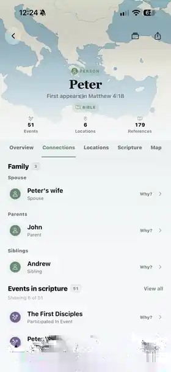
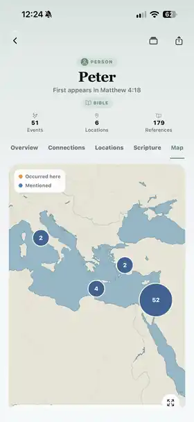

Scripture study, connected
Read deeply.
Share what you find.
A modern reader. Shareable lessons. Study groups. Explore the people, places, and topics that bring you back to the text.
iPhone & iPad via TestFlight · Android beta

More than a place to read
One app.
More ways into scripture.
01 / Shareable lessons
Your study can become
someone else’s starting point.
Bring scripture, questions, images, and private notes into a lesson. Share it for self-paced study or lead everyone through it live.
Discover Lessons
02 / Study groups
A little company.
A shared direction.
Read a plan together, see collective progress, and share the thoughts that stood out. Your personal notes stay private until you choose otherwise.
Study togetherStudy Spaces
What we’re reading.
How we’re growing.
03 / Scripture Explorer
Follow a name.
Find a whole story.
Move between people, relationships, events, places, and the scripture passages that connect them.
Explore the connections

04 / Modern reader
A whole chapter.
Or one verse at a time.
Settle into Chapter mode or slow down with Scroller. Keep notes, highlights, and related verses close as you read.
Find your reading rhythm05 / Topical Guide
Start with a topic.
Let scripture take you further.
Browse topics, open their passages, and follow related scripture across the standard works.
Discover Topical GuideTopical Guide
A topic opens
another way in.
Ready when you are
Your study doesn’t need a signal.
Read scripture, explore connections, browse topics, and build personal lessons offline. Connect when you want to share, sync, or join a live lesson.
No AI in the app.There’s more when you want it
Keep going.
Take your next study a little further
Make room for
more discovery.
Available to try on iOS and Android.